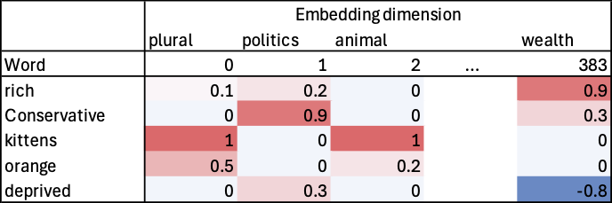
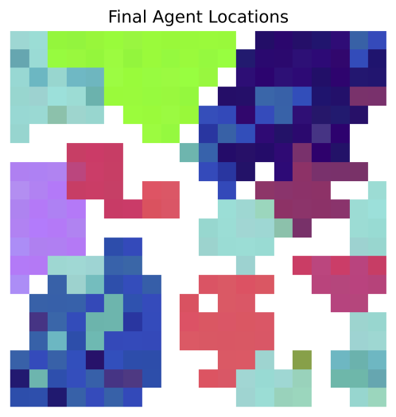

Social Simulation Conference (SSC) 2025
Foundation Models and Embeddings for Nuanced Perception and Decision-Making in Agents
Nick Malleson, Ed Manley
School of Geography, University of Leeds, UK
These slides: www.nickmalleson.co.uk/presentations.html
Overview
Aim: Towards a more detailed representation of individuals using embeddings
Background to large language models (LLMs) and embeddings
Embeddings for nuanced household descriptions
Prototype: Schelling with embeddings
Code Availability
GitHub repository: github.com/nickmalleson/playground/tree/main/llm/schelling_embeddings
Background: Heterogeneity in ABMs
Some agent characteristics can be accurately represented with numeric or categorical parameters:
E.g. Age, income, household type, level of education etc.
But other aspects are much more nuanced
E.g. "I like the government's economic policies, but I am nervous about their approach to immigration and the quality of our public health system."
Maybe these more nuanced characteristics could be better represented by embeddings...
What are embeddings?
One of the innovations that underpin large-language models (LLMs)
Long vectors of numbers that represent the characteristics of words
Transformer architecture uses self attention for dynamic embeddings
I.e. distinguish 'savings bank' from 'river bank' depending on context
Overview of the Experiments
Adapt Schelling's model of residential segregation, but embeddings replace binary household characteristics.
Process:
1. use an LLM to create 300 hypothetical household descriptions (in future these could come from surveys etc.).
2. calculate an embedding for each household and put them into a regular grid model
3. in the model, agents move if their embedding is sufficiently different to the embeddings of their neighbours (use a threshold to decide)
4. run the model until it reaches equilibrium
Household descriptions
Three dimensions for each agent: (i) household structure; (ii) income; and (iii) political beliefs
Descriptions are generated using an open-source LLM:
Llama-4-Maverick-17B-128E-Instruct-FP8 (accessed the LLM using the Together.AI service -- cheap and makes it easy to access very big models)
Prompt:
Produce N one-sentence, anonymous, detailed descriptions of stereotypical UK households, describing their household structure, income and political beliefs. Output in CSV format with one line per household description and nothing else.
Five household descriptions
| ID | Description |
|---|---|
| 0 | A retired couple living alone in a semi-detached house in a suburban area, relying on state pensions and modest savings, strongly supporting the Conservative party. |
| 1 | An elderly couple residing in a suburban, semi-detached house, drawing income from their savings and their state pensions, voting for the Conservative party consistently. |
| 2 | A young, single professional renting a studio flat in a city centre, earning a salary around £35,000 from a career in marketing, voting for the Liberal Democrats and actively campaigning for environmental causes. |
| 3 | A large, multi-generational family residing in a terraced house, with the patriarch working as a manual labourer on a zero-hours contract, the matriarch a part-time carer, and several children, identifying as Labour supporters and strongly union-backed. |
| 4 | A single parent with three children, living in a council flat, surviving on a tight budget that includes Universal Credit and Child Tax Credits, and staunchly supporting the Labour party, particularly its more left-wing elements. |
Household Embeddings
Descriptions converted to embeddings using MiniLM-L6-H384-uncased
Process:
Each text description is tokenised into subword units and passed through the transformer, which uses self-attention to generate contextualised vector representations for each token
Word embeddings aggregated into a single 382-element vector using mean pooling (common approach for creating 'sentence embeddings')
For visualising household types:
Use Principal Component Analysis (PCA) to reduce the 382-element embeddings into 3-element vectors and assign these to R,G,B colour components
(not ideal but OK for demonstrative purposes)
Embedding similarity
Similar household descriptions should have similar embeddings (calculated using cosine similarity)

Results: 5 households test
Run the model with only the five example household types
Final results (300 distinct agent types)
Summary
Demonstrate that embeddings can be used to create rich, heterogeneous agents
In a Schelling-like model, agents cluster depending on the similarity of their embeddings
Challenges:
Bias in LLMs lead to biased embeddings? (Resolve with fine-tuning?)
Computational: if LLMs become more integral to ABMs then the computational requirements explode
Future work
Multi-model agents
Lots of excitement in using LLMs to control agents, but can they also be made multi-modal? (I.e. interpret different types of embeddings, not just text).
Dynamic environments
LLM reasoning may be 'unbounded', but agents are limited by the simulation environment.
i.e. what if our Schelling agents decide that they would rather modernise their house than move?